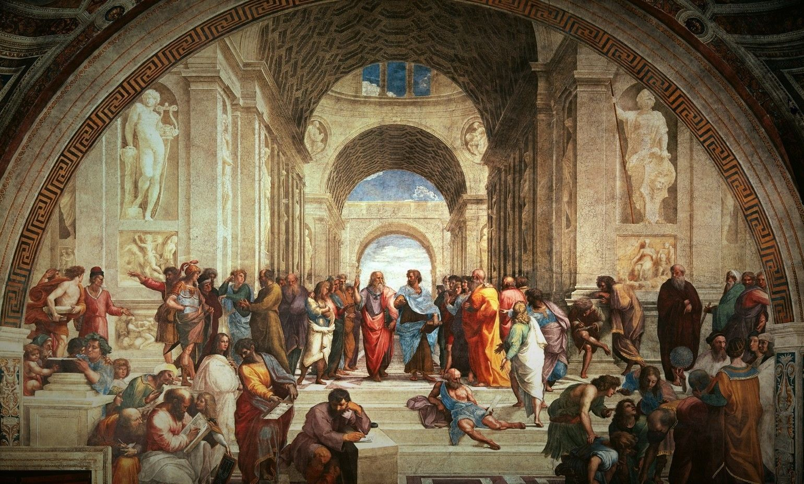

Del s.VI a.C., quan la raó va desplaçar els mites per explicar l'ordre del cosmos. La recerca de l'Arkhé: l'última causa darrere tota la multiplicitat.
Filosofia de la Naturalesa · s. VI a.C.
"La diversitat de la natura és només aparent"
Durant el s. VI a.C., els anomenats filòsofs presocràtics es van interessar per les qüestions lligades especialment a la natura —la "fisis" en grec— i creien que per comprendre-la calia distingir l'aparença de la realitat.
Els múltiples éssers de la realitat semblen molt diferents, però l'ordre al qual obeeixen només pot explicar-se suposant un mateix origen. Segons aquesta interpretació, la diversitat de la natura és només aparent, i han de ser manifestacions d'un principi original únic.
"Comprendre l'ordre i la regularitat de la fisis passava per indagar aquesta última causa de tot allò real, l'Arkhé de totes les coses..."
La recerca passa definitivament per la indagació i el descobriment de les lleis que governen l'esdevenir; i aquesta recerca s'efectua des de la raó.
Naturalesa
Els primers filòsofs inauguren la filosofia preguntant-se per la Fisis. Cerquen la possibilitat d'una última causa darrere tota la multiplicitat que la caracteritza.
Principi / Origen
Transcrit també com "arjé" o "arché". És la manera de denominar aquesta última causa, l'últim perquè de totes les coses, el principi explicatiu de tota la fisis.
🌍 COSMOS
Ordre, regularitat, necessitat. El món obeeix lleis que la raó pot descobrir. Les coses succeeixen perquè han de succeir.
⚡ CAOS
Caprici, voluntat de déus, màgia. Tot és possible. Impredictible. Pensament prefilosòfic.
Necessari
"Ha de ser". Les coses succeeixen perquè han de succeir. Ordre de lleis. El fonament de la ciència: relacions causa-efecte.
Contingent
"Que tant pot ser com no ser". El que depèn del caprici. Característic del pensament màgic i prefilosòfic.
En entendre el món des de la "necessitat", el que s'està prefigurant és un dels conceptes imprescindibles perquè pugui constituir-se la Ciència com a tal: el concepte de causa.
Segle VI a.C. · Arkhé: L'AIGUA
Considerat el primer filòsof, en ell podem constatar d'una manera clara l'abandonament de les llegendes i els mites que tradicionalment explicaven la realitat. Dedicat a buscar el saber racionalment, efectua el que s'ha donat per titular com "el pas del mite al logos" (Logos = raó, llei...).
"Tales comença a pensar des de la necessitat: les coses succeeixen perquè han de succeir, i aquest ordre de necessitat es reflecteix en una sèrie de lleis que es tractaria d'anar descobrint."
L'esdevenir ja no és pas per la voluntat de déus, herois màgics i forces vives en general. Amb ell, la recerca passa definitivament per la indagació i el descobriment de les lleis que governen aquest esdevenir.
Per Tales, l'Arkhé hauria estat l'aigua. Tot i que les seves raons concretes representen la part més anecdòtica del seu pensament, l'elecció no és casual: l'aigua és essencial per a la vida, present en tota la natura, i pot adoptar les tres formes (líquid, sòlid, gas).
Allò essencial és la manera que té Tales d'aproximar-se al coneixement del món, des de la idea de la "necessitat" i no ja des del caprici.
Astronomia
Es creu que va predir un eclipsi solar.
Geometria
Va calcular l'alçada de les piràmides d'Egipte basant-se en la seva ombra. Desenvolupà el teorema de Tales.
Economia
Va predir una època de bona collita i va enriquir invertint en magatzems, demostrant que els filòsofs poden fer-se rics si ho desitgen.
La nova manera d'entendre i pensar la realitat ens permet aspirar a tenir un control efectiu de l'esdevenir. Amb el pensament racional queda clar que només es pot manejar l'esdevenir si es coneix els seus mecanismes interns de funcionament, podent actuar llavors sobre les causes reals vinculades a aquells efectes concrets que mirem de controlar.
Milet · Arkhé: APEIRON (L'IL·LIMITAT)
Anaximandre, nascut a Milet, va ser deixeble i company de Tales. A ell se li atribueixen diverses troballes i activitats científiques: va liderar expedicions, va introduir l'ús del gnòmon a Grècia, i va ser el primer a traçar un mapa del món, representant-lo com un disc circular envoltat per un riu anomenat Oceà.
"Anaximandre també va elaborar una explicació racional sobre l'origen humà. Creia que els éssers humans provenien de zones humides i originalment tenien una closca espinosa que va desaparèixer a mesura que es van traslladar a zones més seques, anticipant certes idees de la Teoria Evolutiva."
Anaximandre divergia del seu mestre, Tales. Pensava que el principi no podia ser un element concret:
L'Arkhé ha de ser previ a tota definició. Des de la no-definició resta habilitat per poder-ho ser tot consecutivament: una cosa i el seu contrari. D'aquí que Anaximandre anomeni a l'Arkhé "Apeiron" (= il·limitat, en el sentit d'in-definit).
"Ser algo és tenir una o altra definició, aquella que el fa ser això i no allò, i en aquest mateix moment ha de ser limitat. El seu límit ve, precisament, de tenir una o altra definició."
Anaximandre explicava el pas de la indeterminació a la determinació a través de la separació de contraris:
Apeiron
L'indeterminat, l'origen
Els oposats s'alternen constantment. El món està destinat a desaparèixer per tornar a l'origen, repetint el procés infinites vegades.
Milet · Arkhé: L'AIRE
Anaxímenes, deixeble d'Anaximandre, és considerat el tercer i darrer filòsof de l'escola de Milet. Va escriure un llibre del qual han arribat alguns fragments a través de filòsofs posteriors.
A diferència dels seus predecessors, Anaxímenes va construir una teoria diferent, encara que amb similituds. Igual que Anaximandre, creia que l'Arkhé era infinit i il·limitat, però a diferència d'ell, pensava que havia de ser una substància determinada.
"Anaxímenes va concloure que aquesta substància era l'aire."
Anaxímenes va introduir els conceptes de "procés" que relliga els elements. L'aire està en constant moviment i canvia formant la resta d'elements del cosmos:
L'aire es torna més subtil i lleuger → es forma el foc.
L'aire es torna més dens i pesant → es forma la terra i les pedres.
Magna Grècia · Itàlia del Sud · s. VI a.C.
Paral·lelament a l'escola de Milet, a les colònies gregues del sud d'Itàlia i Sicília va sorgir una tradició filosòfica diferent. Mentre els milesians buscaven l'Arkhé en substàncies materials, la Magna Grècia explorarà principis més abstractes: els números, la unitat de l'Ser, i les primeres respostes a la pregunta pel canvi.
Magna Grècia · Crotona, Itàlia del Sud · s. VI a.C.
"L'Arkhé de la Physis són els Números"
Al segle VI aC, a la ciutat de Crotona (sud d'Itàlia), va sorgir una escola de pensament racional única: els pitagòrics. Liderats per Pitàgores de Samos, van combinar elements de matemàtiques, filosofia, religió i mística.
"Adonar-se que la Physis és un ordre, que presenta patrons de comportament i que aquests són matematitzables, porta a entendre la natura com formada per números."
El seu pensament va tenir un gran impacte en la història de la filosofia, tant la seva concepció dualista del ser humà, com especialment el fet de comprendre la realitat a partir de les matemàtiques. L'Arkhé de la Physis, per Pitàgores, seran justament els números.
"La filosofia està escrita en aquest gran llibre que contínuament està obert davant els nostres ulls (vull dir l'Univers), però no es pot entendre si primer no s'aprèn a comprendre la seva llengua i a llegir els caràcters en què està escrit. Està escrit en llenguatge matemàtic, i els caràcters són triangles, cercles i altres figures geomètriques..."
— Galileu Galilei, s. XVI-XVII
Aquesta intuïció pitagòrica serà una peça clau per al desenvolupament de la Ciència Moderna.
La comunitat de pitagòrics professava un conjunt de creences anomenades ORFISME, basades en un dualisme antropològic Cos-Ànima:
Dualisme Cos / Ànima
El cos és una presó per a l'ànima. A la mort del cos, l'ànima pot alliberar-se i transmigrar a un altre cos.
Transmigració i Purificació
L'ànima ha de distanciar-se del cos i reencarnar-se en formes de vida més elevades i pures.
Ascetisme
Esforç de contenció i distanciament en la relació amb el cos i les seves exigències sensibles. Cal abstenir-se de certs plaers per assolir la saviesa i la proximitat amb el diví.
Les matemàtiques, en tant tenen lloc des de la raó i la seva naturalesa no és sensible sinó intel·ligible, són una via practicable per a aquest procés ascètic que no té altra voluntat que la purificació de l'ànima.
💡 Els pitagòrics es van horroritzar amb el descobriment de la irracionalitat de la √2... i van intentar mantenir-lo en secret!
De l'Arkhé al conflicte fonamental...
-El debat fundacional de la metafísica grega-
"El Fosc" · Efes, Jònia · s. VI a.C.
Heràclit, conegut com "el fosc", expressà el seu pensament amb un to enigmàtic i un llenguatge sovint difícil d'interpretar. Va viure al segle VI aC a Efes, Jònia.
"Tot flueix. Mai et banyes en el mateix riu."
La seva filosofia es centrava en el concepte del canvi constant. Feia servir la metàfora de l'aigua per explicar aquest canvi, argumentant que tot a l'univers està en constant moviment i transformació. Creia que l'estabilitat és una il·lusió, i que la veritable essència de les coses està oculta als sentits i es revela només a la raó.
Posats a suggerir un Arkhé, per Heràclit seria el foc en tant representació del ser de les coses: el moviment incessant, la transformació permanent. El foc simbolitza el canvi continu i l'equilibri dinàmic del cosmos.
Heràclit introdueix la Dialèctica: un mètode de raonament que accepta la contradicció i cerca comprendre la realitat a través dels oposats.
La contradicció és el fonament últim
Cal atènyer a les coses des d'aquesta contradicció. La presència de "l'un" remet a la presència de "l'altre".
Els contraris s'inclouen mútuament
No podem entendre allò calent sense allò fred. Es necessiten l'un a l'altre.
Tensió i harmonia
La tensió entre els contraris es resol en una harmonia subjacent (com la tensió d'un arc).
Aquest moviment no es produeix de manera caòtica. És un moviment harmònic i equilibrat governat pel Logos (= Raó, llei):
Guerra
vs
Pau
Harmonia
vs
Discòrdia
Calent
vs
Fred
Jove
vs
Vell
La Physis és inherentment contradicció. No hi ha res que no estigui constantment sotmès al canvi. Darrere l'aparent quietud hi ha una tensió entre contraris que és la causa d'aquest moviment permanent.
"El Ser és, el no-Ser no-és" · Elea, Magna Grècia
Parmènides va ser un filòsof presocràtic que va viure al segle VI aC i és considerat l'iniciador i el pensador més influent de l'escola d'Elea (Magna Grècia, sud d'Itàlia).
És conegut per la seva única obra en forma de poema, originalment dividida en tres parts: un proemi i dues estrofes. Les interpretacions de la seva obra han estat objecte de controvèrsia al llarg de la història.
"Al proemi del seu poema, Parmènides descriu un viatge imaginari en què unes egües el condueixen a través de les portes del dia i de la nit cap a la presència d'una deessa que li revelarà el coneixement."
🧠 Raó
Lloc on s'esdevé el veritable coneixement. Accedir al que és realment la Physis és accedir a alguna cosa oculta als sentits i només desvelada per la raó.
👁️ Sentits
Els sentits ens enganyen. Ofereixen una visió aparent i enganyosa de la realitat.
Parmènides estableix dos camins contradictoris i excloents:
"El ser és, el no ser no és." El Ser és allò que es pot pensar i dir. El No-Ser no es pot pensar, no es pot dir, i en definitiva, no pot ser.
"El ser és, i el no ser també és." Aquesta via és pròpia dels homes ignorants. No és factible conèixer i pensar el que no és.
Immutable
No canvia
Il·limitat
Sense fronteres
Infinit
Sense fi
Únic
Un sol ésser
Indivisible
Sense parts
Permanent
Etern
"El canvi o moviment no és possible, i només seria una aparença dels sentits."
Heràclit vs. Parmènides: el debat que estructura tota la filosofia posterior
El canvi és real. Tot flueix. Els sentits detecten el flux permanent.
ARKHÉ: El Foc
El canvi és impossible. El Ser és immutable. Els sentits enganyen.
ARKHÉ: El Ser
Parmènides nega el canvi perquè implica el pas del Ser al no-Ser. Heràclit l'afirma com l'essència mateixa de la realitat. Com reconciliar ambdues visions? Aquest és el problema que els filòsofs posteriors hauran de resoldre.
Empèdocles
Reconcilia amb 4 elements + Amor/Odi
Anaxàgores
Reconcilia amb homeomeries + Nous
Demòcrit
Reconcilia amb àtoms + buit
Solució al Gran Conflicte · ss. V–IV a.C.
Reconciliar Parmènides i Heràclit: múltiples principis per explicar l'u
4 Elements + Amor i Odi
Empèdocles, un destacat filòsof i polític d'Agrigent, Sicília, va pertànyer al grup de filòsofs pluralistes. Acceptà la inexistència del no-ser i la immutabilitat de l'ésser de Parmènides, així com l'existència de l'esdevenir i del canvi d'Heràclit.
"La realitat està formada per quatre elements bàsics: foc, aire, aigua i terra, els quals són substàncies invariables i eternes."
Els elements també es consideren divinitats fonamentals, les "arrels de tot". La variabilitat de l'univers es deu a les diferents combinacions d'aquests elements.
Per explicar el canvi, Empèdocles va introduir dues forces:
Fa que els elements s'uneixin i es barregin. Tendència a la unió.
En provoca la separació. Tendència a la disgregació.
Cicle còsmic: Quan predomina l'amor, els elements s'uneixen en una esfera compacta (com el Ser de Parmènides). Amb el temps, l'odi els separa fins a la disgregació total. El procés es repeteix infinitament.
🔥
FOC
💨
AIRE
💧
AIGUA
🪨
TERRA
Reconciliació: Els 4 elements son immutables i eterns (Parmènides) però les seves combinacions canvien constantment (Heràclit). L'Amor i l'Odi expliquen aquest moviment.
Homeomeries + Nous
Nascut a Clazòmenes però resident a Atenes durant la major part de la seva vida, va ensenyar a figures prominents com Pèricles i va compartir idees amb filòsofs com Empèdocles, Heràclit i Parmènides.
Com Empèdocles, és un filòsof pluralista. Però en el seu cas la Physis està composada per molts més elements que no pas 4. De fet en són infinits, i serien una espècie de llavors últimes.
Terme acunyat per Aristòtil per anomenar aquestes llavors. Són els elements constitutius de tota la realitat, de caràcter qualitatiu i infinits en número.
"Tot està en tot. Però en cada cosa hi predomina una homeomeria que és la que fa que cada cosa sigui el que és."
Anaxàgores estableix el Nous (= intel·ligència o ment) com un principi ordenador:
Principi de discerniment
Allò que estaria darrere de tot l'ordre que expressa la Physis.
Organitzador, no creador
Organitza les combinacions i separacions de les llavors per crear un univers ordenat interferint amb el caos inicial.
Sense voluntat
No és un principi creador com el Déu judeo-cristià. El Nous només és enteniment i discerniment.
Per la cultura grega el món no havia estat creat i maneja una concepció del temps circular, no pas lineal. Després, amb la religió cristiana, Déu sí és creador i té voluntat. Llavors el temps passarà a concebre's com a lineal.
Reconciliació: Les homeomeries, infinites, son immutables (Parmènides). El Nous les organitza posant-les en moviment (Heràclit). El canvi és real però el substrat és etern.
Àtoms i Buit
Demòcrit, un influent filòsof pluralista de l'antiga Grècia, va basar les seves teories en els ensenyaments del seu suposat mestre, Leucip, incorporant a la història del pensament el concepte d'"àtoms".
La seva filosofia es va centrar en la idea que la realitat està formada per una pluralitat de principis. Seguint Parmènides, va acceptar la immutabilitat i eternitat de l'ésser. Tot i això, també creia en l'existència del moviment i el canvi, seguint Heràclit.
"La realitat està dividida en dues maneres de ser: allò ple (el Ser) i allò buit (el no-Ser)."
Va argumentar que l'existència del buit era necessària per explicar el moviment:
Les veritables unitats de l'ésser. Indivisibles ("àtom" vol dir "indivisible"). Diminutes partícules, infinites en formes i mides, completament plenes.
Allò buit equival al no-Ser. És necessari perquè els àtoms es puguin moure i xocar. Sense buit, no hi ha moviment.
Els àtoms es mouen eternament a l'espai buit i, en xocar entre si, formen els cossos que percebem: conglomerats d'àtoms.
Demòcrit va postular que l'ànima estava composta per àtoms lleugers que es movien constantment, donant vida al cos. La vida de l'ànima depenia de la respiració: quan cessava, els àtoms es dispersaven i l'ànima moria.
Reconciliació: Els àtoms serien el Ser de Parmènides (immutables, eterns). Però ara, en l'atomisme, el no-ser també és: és el buit. Així es salva tant la permanència (els àtoms) com el canvi (el seu moviment al buit).
De l'aigua concreta als àtoms invisibles: un camí de refinament conceptual
Aigua
Apeiron
Aire
Números
Foc
Ser
Àtoms
Els presocràtics ens conviden a preguntar-nos per l'origen
Per què Tales escull l'aigua?
Perquè és essencial per a la vida, present arreu, i pot adoptar tres formes. Però la resposta concreta és menys important que el mètode: pensar des de la necessitat, no des del mite.
En què millora Anaximandre?
Salta a l'abstracció: l'Arkhé no pot ser un element concret perquè estaria limitat i no podria explicar els seus contraris. Proposa l'Apeiron, l'indeterminat.
Què aporta Anaxímenes?
Torna a una substància concreta (l'aire) però hi afegeix el concepte de procés: rarefacció i condensació. A més, vincula l'aire amb l'ànima.
Heràclit o Parmènides: qui té raó?
El debat no té resolució fàcil. Heràclit prioritza l'experiència del canvi; Parmènides prioritza la coherència lògica. Ambdós tenen arguments poderosos.
Què és el Logos per a Heràclit?
És la raó o llei natural que governa l'univers, que dóna sentit al canvi i manté l'equilibri. És ocult als sentits i només accessible a la raó.
Com reconcilia Parmènides el canvi?
No el reconcilia: el nega. El canvi és pura aparença dels sentits. El Ser és immutable perquè el no-Ser no existeix, i tot canvi implicaria passar del Ser al no-Ser.
Com salva Empèdocles els dos mons?
Els 4 elements són immutables (Parmènides) però les seves combinacions canvien (Heràclit). Les forces d'Amor i Odi expliquen aquest canvi.
Què és el Nous d'Anaxàgores?
Un principi d'intel·ligència que ordena les homeomeries. No és creador ni té voluntat: només organitza el caos inicial.
Per què el buit és revolucionari en Demòcrit?
Perquè accepta el "no-Ser" com a real (el buit), cosa que Parmènides negava. Així salva tant l'immutabilitat (els àtoms) com el moviment (al buit).
L'abandonament de les explicacions mítiques per la recerca racional de causes. El món és un cosmos, no un caos.
El debat fonamental entre Heràclit (tot flueix) i Parmènides (el Ser immutable). Estructura tota la metafísica posterior.
De l'aigua als àtoms, passant per l'Apeiron, els números i el foc. La recerca de l'última causa darrere la multiplicitat.
"El món és un cosmos, no pas un caos."